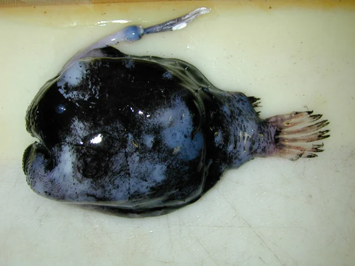
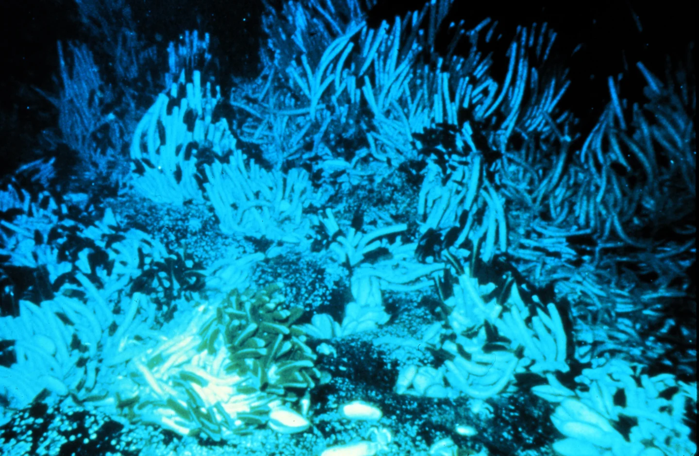

深海沒有陽光，熱泉旁的管蟲靠什麼活？
大洋與深海
海面附近，浮游藻類能用陽光製造有機物。往下到光不足以支持光合作用的深海，動物的食物要從哪裡來？
從臺灣外海的上層水域出發，再用全球深海案例比較能量來源。後文管蟲照片並非臺灣拍攝。
不少深海生物靠海面送下來的食物
藻類、其他生物的遺體和排泄物會從上層水域往下沉。這些有機碎屑俗稱「海雪」，能成為部分深海生物的食物。光能到達的深度受水的清澈程度影響，會隨海域與當時的水況而變。
有些海底熱泉附近，微生物能在當地造食物
海底熱泉是受地熱加熱的流體從海底冒出的地方。有些細菌能利用硫化氫等物質發生化學反應時釋放的能量，把二氧化碳做成有機物，這叫化學合成。在巨型管蟲體內，這些細菌提供養分，管蟲則把細菌需要的物質送到牠們身邊。
陽光照得到的上層水域
靠近海面的水有足夠日光讓藻類行光合作用。
藻類矽藻等浮游藻類多半小到肉眼難以看清，是上層水域的食物來源之一。
動物橈腳類是小型甲殼動物，很多會攝食浮游藻類。臺灣東北部外海可見花腹鯖等在水中成群活動的魚。
深海水層與海床
光線愈深愈弱，絕大多數深海海床呈黑暗、低溫又高壓的環境。
食物來源下沉的有機碎屑不會全部抵達海床：有些在途中就被動物攔截，留下的部分才沉積到海底。
動物有些深海鮟鱇魚利用發光構造誘捕獵物。海床上也可見取食沉積物的海參等底棲動物，也就是靠近海床生活的動物。


海底熱泉周圍
富含化學物質的熱流體從海床湧出，和較冷的海水混合。
微生物部分細菌以化學反應提供的能量合成有機物，能在局部形成食物網。
動物部分太平洋熱泉有巨型管蟲，牠們依靠住在體內的細菌提供食物。

NOAA／OAR／National Undersea Research Program · 公有領域 · 本站縮圖

想一想
深海動物能量的兩條路，可以沿著「海面有機碎屑往下沉」和「熱泉旁的微生物就地製造有機物」來比較。
同樣在黑暗中，熱泉旁和一般深海的食物來源有什麼差別？
許多深海環境依靠由海面沉降的有機物。熱泉旁的微生物還能靠當地流體提供的化學物質製造有機物。
資料來源
美國 NOAA Ocean Exploration｜化學合成與海底熱泉
教材｜《高中基礎生物（下）》6-3，頁 156–157